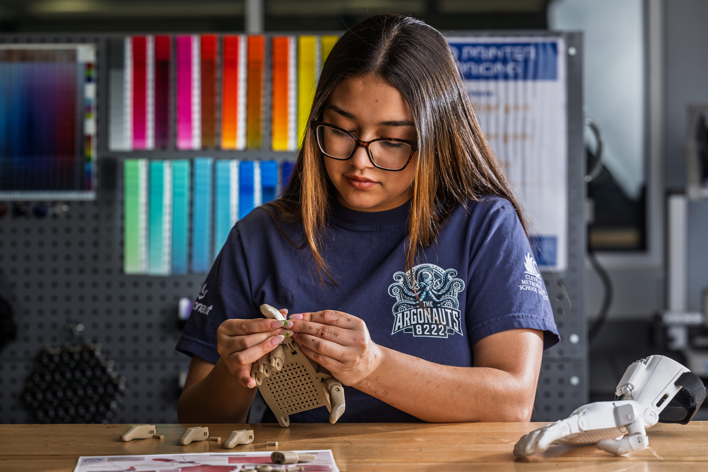

Scroll Animation — Immersive
Full-bleed 3D hand animation runs behind frosted editorial panels through the entire article. Parallax hero bleeds under the headline. Canvas-based, flicker-free scroll experience.
Open Version A →

Light Editorial — Chapters & Collage
Warm parchment background with numbered chapter dividers and gold rules. Photo collage grid, stats section. Animation embedded as its own chapter mid-article. Clean, print-magazine feel.
Open Version B →

Cinematic — Animation as Hero
Opens with a full-screen scroll-driven hand animation that builds the headline in stages as you scroll. Then transitions to a clean editorial layout. Most dramatic first impression.
Open Version C →

Dark Mode — Night Editorial
Near-black background throughout with gold accents. Three-column stats grid, left-border pull quotes. Bold photo mosaic. High contrast, contemporary digital magazine aesthetic.
Open Version v2 →